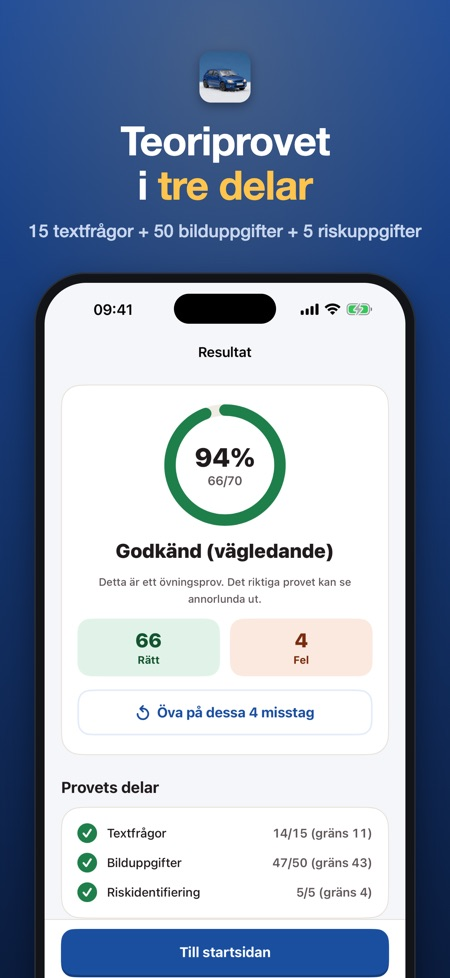
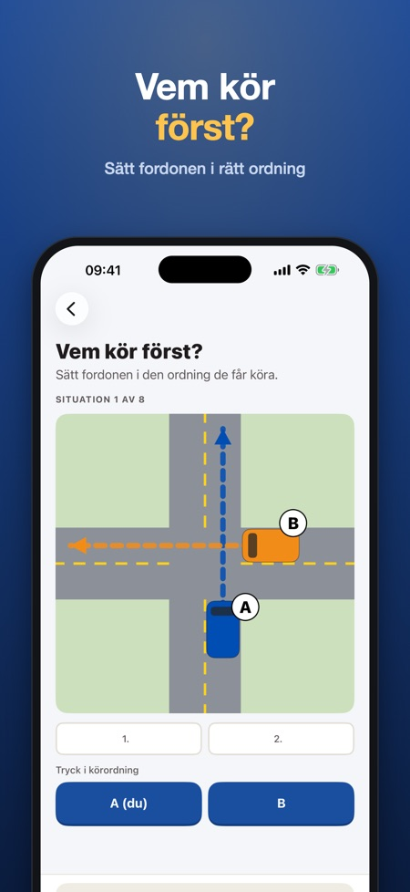
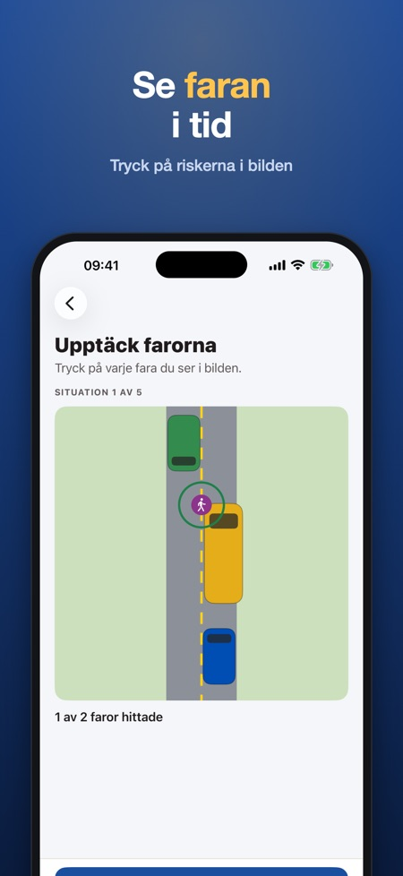

Teoriprov B – på svenska. Öva teoriprovet i Traficoms tredelade format: 15 textfrågor, 50 bilduppgifter och 5 riskuppgifter. Över 300 frågor med förklaring och lagrum.



Förbered dig för teoriprovet för B-körkort i Finland enligt Traficoms modell: 15 textfrågor, 50 bilduppgifter och 5 riskuppgifter, 30 minuter. Över 300 frågor i 12 ämnen, var och en med förklaring och lagrum. Betala en gång, ingen prenumeration.
DET HÄR INGÅR
• Vägmärken och att känna igen dem, förkörsrätt och korsningar, trafikljus och vägmarkeringar, hastighet och omkörning, gående, cyklister och spårvagnar, parkering, vinterkörning och vilt, fordonet och skyddsutrustning, förarens skick och första hjälpen, ekonomisk körning samt riskuppfattning
• Bildfrågor: vägmärken och korsningar sedda ovanifrån – vem kör först?
• Korsningsövning: sätt fordonen i den ordning de får köra
• Farosituationer i bild: tryck på varje fara du ser
• Frågor om riskuppfattning: vilken är den största faran?
• Vägmärkesregister: 46 vanliga märken med namn och betydelse, sök på namn eller kod
• Kort övningsprov (10 frågor) och fullständigt övningsprov enligt den officiella modellen (15 + 50 + 5 uppgifter, 30 minuter) med tid
• Dina misstag kommer tillbaka tills du har svarat rätt två gånger i rad
• Dagens mål och en svit som håller dig igång
FRÅGOR PÅ SVENSKA ELLER FINSKA
Teoriprovet kan avläggas på svenska eller finska, och frågorna finns på båda språken. Förklaringarna kan du läsa på svenska, finska eller engelska.
RIMLIGT PRIS
Pröva vägmärken, förkörsrätt, märkesregistret, korsnings- och faroövningarna det korta övningsprovet samt ett fullständigt övningsprov utan köp (förklaringarna i låsta ämnen ingår i fullversionen). Lås upp allt med ett köp. Ingen prenumeration, ingen reklam, inget konto. Fungerar utan internet.
Appen är fristående och har ingen koppling till Traficom, Ajovarma eller andra myndigheter. Frågorna är våra egna och bygger på vägtrafiklagen 729/2018; de är inte officiella provfrågor. Vägmärkena är egna ritningar. Det fullständiga övningsprovets uppbyggnad (delar, antal uppgifter, gränser och tid) följer Traficoms föreskrift om teoriprov, men frågorna och bilderna är våra egna, så resultatet är vägledande.